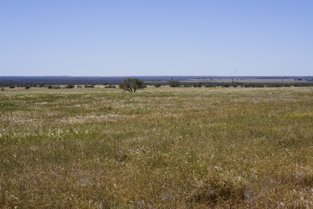
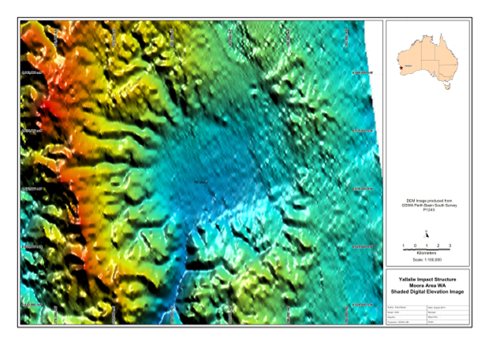
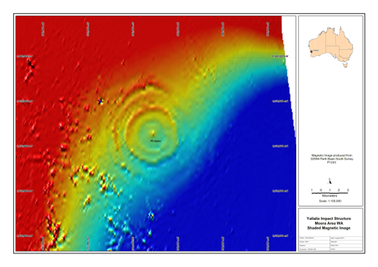
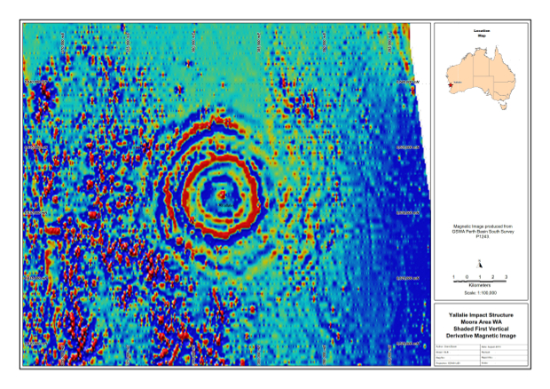
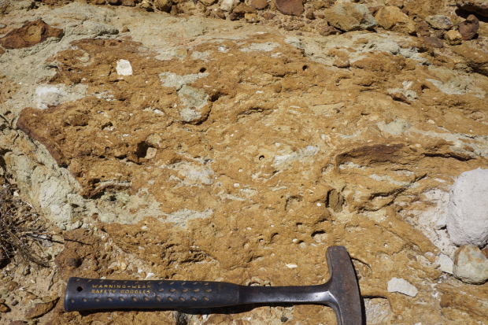
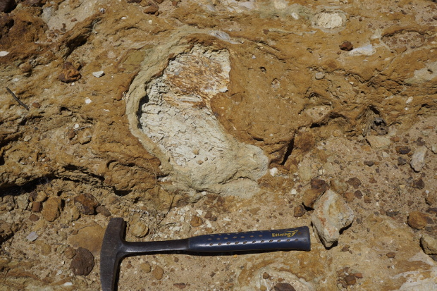
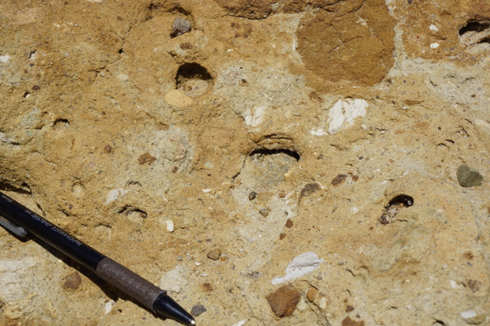
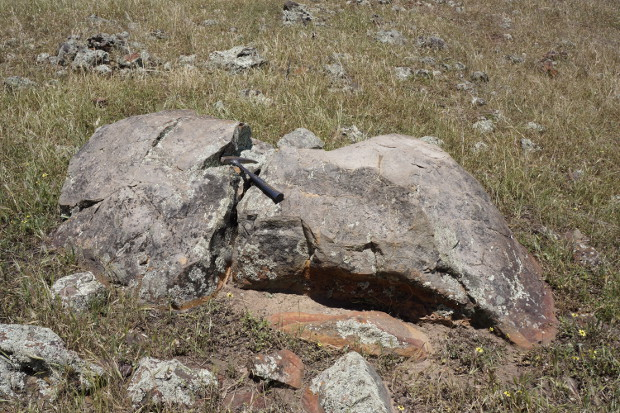
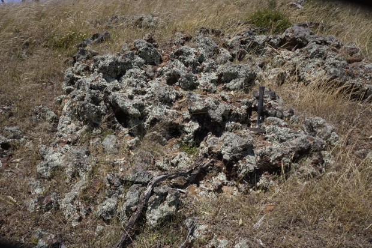
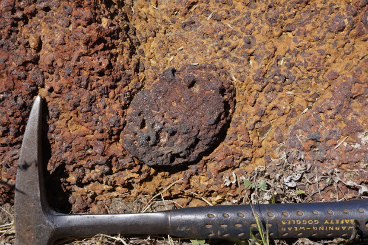

The Gosses Bluff (Tnorula) Impact Structure
This impact structure is located in the southern region of the Northern Territory. It is located at 132 deg 18 min east and 23 deg 49 min south on the Hermannsberg SF53-15 1:250 000 mapsheet and the Gosses Bluff 5350 1:100 000 mapsheet. It is apparently one of the most completely preserved and best-exposed imapct structures in the world. The crater is located in rolling farmland between the towns of Moora and Badgingarra. The structure was first identified during oil exploration in 1990 and recognised as a possible impact structure by Dentith et al (1999). Much of the detail given below has been derived from Bevan (2012).
In 2012, the Meteoritical Society hosted a field excursion to some of the WA craters and impact sites, and the extract for the Yallalie visit can be found here.
View looking east across the Yallalie Impact Structure
The impact structure is about 12 km in diameter and seismic profiles show a basin of chaotic reflections extending to a depth of about 2 km.
I have compiled a variety of data from public sources including published technical papers, geoscientific data (geology and geophysics) and produced maps summarising some of this data where appropriate. I have referenced all data sources, but if I have missed any please let me know so I can correct this. I have created a series of images using public data and compiled in MapInfo as follows;
The Yallalie impact structure is evident in the surface topography using the geophysical survey's digital elevation model. This image was created using the digital elevation data from the Geological Survey's P1243 "Perth Basin South" aeromagnetic survey. The circular low is clearly visible in this digital elevation image.
The magnetic image below clearly shows a circular feature.

This circular feature which is enhanced when we look at the first vertical derivative image below.

The drilling of two petroleum exploration holes and the seismic data has allowed the structure of the Yallalie impact structure to be inferred. Correlation of the geology across the structure indicates a central uplift and roughly bowl-shaped area of disrupted geology. Additional detail of the gravity, magnetic and geological studies are supplied by Bevan (2012). The features of the impact structure indicates that the bolide impacted about 83 million years ago into volatile-rich target rocks, the Coolyena Group, which comprises a continuous sequence of marine to shallow marine sediments that were deposited in less than 100 m of water.
The Mungedar Breccia is an ejecta blanket exposed on the south western side of the crater and comprises breccia material from mega-blocks measuring several metres across to clasts of no more than a few centimetres. The clasts are set in a green fine-grained, clastic matrix that sometimes show textural evidence of fluidisation.

Matrix of the Mungedar Breccia exposed near dam (Locality 1).

Light grey coloured shale clast showing reduction rim around the clast. The rounded shape gives the impression of deformation of the clast indicating the clast ost sediment may have been plastic at the time of impact.

Detail of the more massive matrix of the Mungedar Breccia.

Outcrops of Mungedar Breccia on the tops of the ridges to the north of Locality 1.

Large sandstone clasts exposed among poor outcrops of the Mungedar Breccia.

Typical outcrop of the Mungedar Breccia.

Lateritised Mungedar Breccia near the highest levels of the Breccia outcrop and showing rounded clasts within the laterite.
References
Milton D J, Glikson A Y and Brett R. 1996. Gosses Bluff - a latest Jurassic Imapct Structure, Central Australia. Part 1: Geological Structure, Stratigraphy, and Origin. AGSO Journal of Geology & Geophysics, 16(4), p. 453-486
Milton D J, Barlow B C, Brown A R, Moss F J, Mainwaring E A, Sedmik E C E, Young G A and Van Son J. 1996. Gosses Bluff - an end-Jurassic Impact Structure, Central Australia. Part 2: Seismic, Magnetic and Gravity Studies. AGSO Journal of Geology & Geophysics, 16(4), p. xxx - xxx
Other Impact Sites of Western Australia
Glikson
Gnargoo
Goat Paddock
Ilkurka
Lennis
Mercury
Piccaninny
Skirmish
Spider
Veveers
Woodliegh